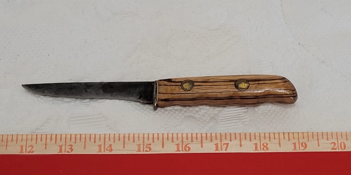
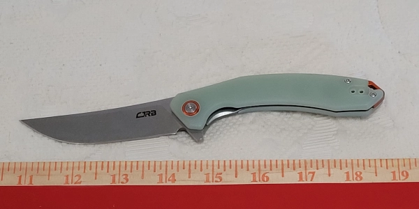
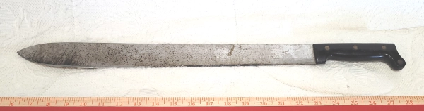

Home
Gallery
Profiles
Safety, Sharpening, & Care
My First Knife
Brazilian Souvenir
My 1
st
Purchase
Forged By Me
Hunting Knife from a Kit

Refurbished Hunting Knife

My Latest

Watermelon Slicer
Swiss Army Pioneer